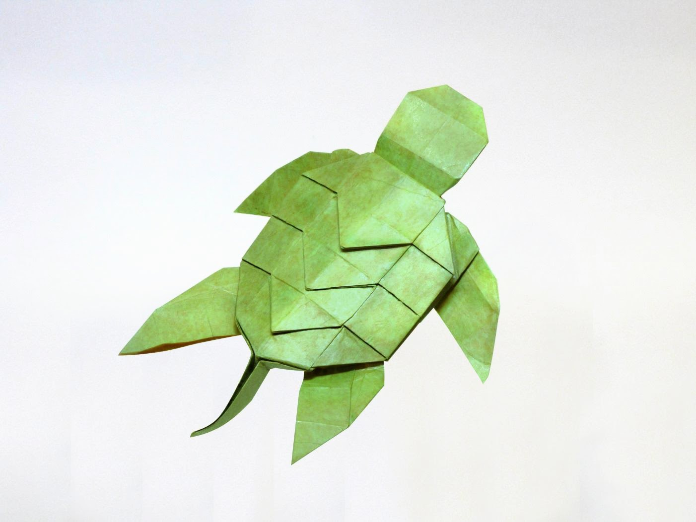

January 2015
First designed sometime around 2014 or 2015 (middle school), this model didn't gain popularity until around 2019 (high school) when I started posting online. It became a popular choice as a beginner crease pattern, and it got recommended so often that the name "Plant's turtle" started to stick ("Plant" was my online nickname). It was also the tutorial that started my YouTube channel, and I've seen many people in my life--even those who don't normally do origami, like my high school English teacher--fold this model. For these reasons, this model is very special to me.

Tags: simple, portolio, animal, sea_life, bp, uniaxial, has_cp, has_video, 2015,